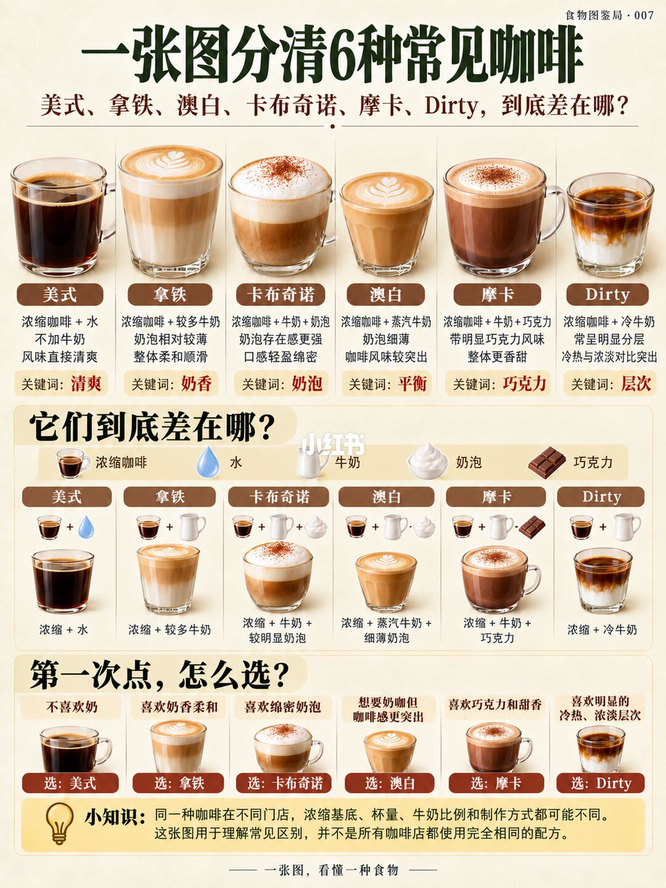

1/1
六杯咖啡，差在加料和奶泡

图题是「一张图分清 6 种常见咖啡」，右上角标着食物图鉴局 · 007。上排六只玻璃杯各配一句配方和一个词。美式是浓缩加清水，不加牛奶，词是清爽。拿铁是浓缩加较多牛奶，奶泡相对较薄，词是奶香。卡布奇诺是浓缩加牛奶加奶泡，奶泡存在感更强，画面上还有可可粉，词是奶泡。澳白是浓缩加蒸汽牛奶，奶泡细薄，咖啡风味较突出，词是平衡。摩卡是浓缩加牛奶加巧克力，更香甜，词是巧克力。Dirty 是浓缩加冷牛奶，常呈明显分层，冷热和浓淡对比突出，词是层次。
中段标题「它们到底差在哪」，用浓缩、水、牛奶、奶泡、巧克力五个图标把上面六句再写一遍。拿铁写成「较多牛奶」，卡布写成「较明显奶泡」，澳白写成「蒸汽牛奶加细薄奶泡」。下段「第一次点，怎么选」按偏好对号：不喜欢奶选美式；喜欢奶香柔和选拿铁；喜欢绵密奶泡选卡布；想要奶咖但咖啡感更突出选澳白；喜欢巧克力和甜香选摩卡；喜欢冷热、浓淡层次选 Dirty。
黄底小知识写明：同一种咖啡在不同门店的浓缩基底、杯量、牛奶比例和做法都会有差异，这张图用来理解常见区别。正文把同一句话再说了一遍，并明确不必死记所谓的标准比例。页脚口号是「一张图，看懂一种食物」。
边界
能用来点单，不能当成店里的毫升表
六杯的差别被收成「加什么」和「奶泡厚薄、是否分层」。图上没有任何毫升、克数或奶泡厚度。澳白「咖啡感更突出」、卡布「奶泡更明显」是这一页的相对说法；小知识已经承认换一家店，基底和比例都会变。
Dirty 的分层画成冷牛奶在下、深色浓缩在上。图没有写浓缩必须是热的、牛奶必须冷到多少度，分层是否出现取决于倒法。卡布画面上的可可粉没有写进配方公式，公式只写到浓缩、牛奶和奶泡。